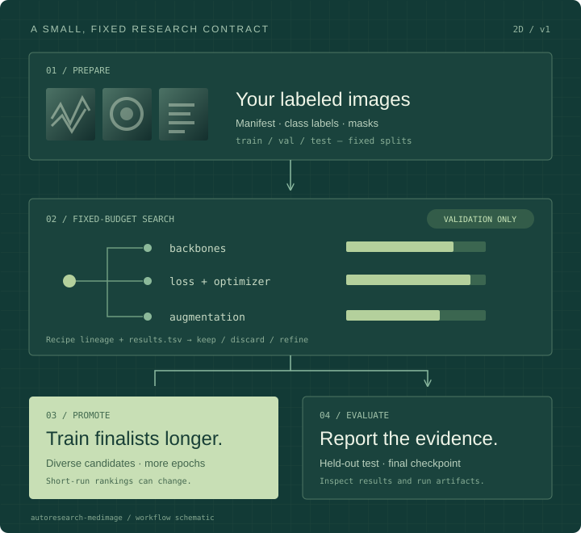

01Prepare
Start with your data.
Use labeled image folders or an explicit manifest with splits, class labels, and segmentation masks. Validate the dataset before launching experiments.
Dataset contractprepare.py stays fixed during search
Open-source medical imaging research
A small, reproducible workflow for exploring models, losses, and training recipes on your 2D medical images.
Let short, fixed-budget experiments surface promising candidates. Refine the search, train the finalists longer, and reserve held-out evaluation for the final report.
A medical-imaging adaptation of Andrej Karpathy’s autoresearch.
Built by Matthew P. Lungren, MD, MPH.

The method
Keep the data and evaluation contract stable while exploring the training recipe. Each run leaves a record you can inspect, compare, and revisit.
Use labeled image folders or an explicit manifest with splits, class labels, and segmentation masks. Validate the dataset before launching experiments.
Dataset contractprepare.py stays fixed during search
Compare backbones, losses, augmentation, and optimization with short runs. The optional adaptive loop tracks candidate lineage and keeps multiple promising branches alive.
Search implementationtrain.py + recipes + results.tsv
Promote diverse candidates to longer training. Make search decisions on validation data; use the held-out test split for the final evaluation of saved checkpoints.
Promotion workflowLonger runs → final evaluation → report
Bring your own data
Start with a supported task and describe the dataset once. Recipes make the training choices explicit.
name: your_dataset
task: classification
metric: auc
num_classes: 2
class_names: [negative, positive]
in_channels: 1
image_size: 224Examples include fundus or OCT classification. Supported metrics include accuracy, AUC, F1, macro F1, and quadratic kappa.
Classification recipename: your_dataset
task: multilabel
metric: mean_auc
num_classes: 2
class_names: [finding_a, finding_b]
in_channels: 1
image_size: 224Use a multi-hot label vector for each image. Chest X-ray multilabel classification is the included worked example.
Multilabel recipename: your_dataset
task: segmentation
metric: dice
num_classes: 2
class_names: [background, foreground]
in_channels: 1
image_size: 256Pair image paths with foreground-mask paths in the split manifest. The current segmentation workflow supports two classes.
Segmentation recipeA worked example / ChestXray14
The documented ChestXray14 experiment series shows why longer follow-up matters: the short-search promoted winner was overtaken by other candidates after 10 epochs.
| Backbone | Candidate | Mean AUC (%) |
|---|---|---|
| EfficientNet-B0 | Alternate recipe | 84.802390 |
| DenseNet169 | Promoted runner-up | 84.726800 |
| ResNet50 | Promoted runner-up | 84.486692 |
| EfficientNet-B0 | Short-search promoted winner rerun | 81.088263 |
Use the short search to find candidates. Use longer runs to compare the finalists.
From overview to experiment
Use the Colab notebook to get started in a browser, or install locally with Python 3.10+ and uv.
Open the Colab notebook Local GPU setup guideLocal smoke test uses the included tiny fixture and no pretrained weights. Benchmark runs require their datasets and appropriate compute.
git clone https://github.com/mattlungrenmd/autoresearch-medimage.git
cd autoresearch-medimage
uv sync --locked
# Prepare your labeled image folder
uv run prepare.py --data /path/to/your/images
# Use the dataset name printed during preparation
uv run train.py --dataset your_datasetgit clone https://github.com/mattlungrenmd/autoresearch-medimage.git
cd autoresearch-medimage
uv sync --locked
# Validate the included tiny dataset
uv run prepare.py --dataset toy_binary
# Exercise a short local training run
uv run train.py --recipe toy_binary_smoke --time-budget 5Research context
The current release supports 2D classification, multilabel classification, and binary segmentation. Search-time selection uses validation data; held-out test reporting is a separate final step.
This is research software. Clinical use requires additional validation, and current scope is described in the project documentation.